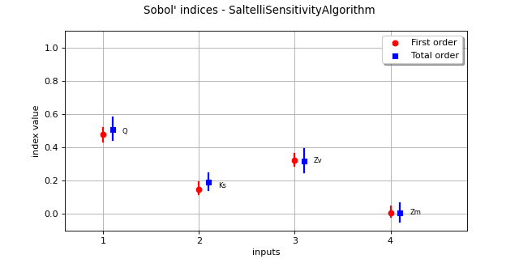

SobolIndicesAlgorithm¶
(Source code, png, hires.png, pdf)
{kind=link}
{kind=link}

-
class
SobolIndicesAlgorithm(*args)¶ Sensitivity analysis.
Notes
This method is concerned with analyzing the influence the random vector
 has on a random variable
has on a random variable
 which is being studied for uncertainty (see also [sobol1993]).
which is being studied for uncertainty (see also [sobol1993]).Here we attempt to evaluate the part of variance of
due to the different components  .
.We denote G the physical model such as . Let us consider first the case where
 is of dimension 1.
is of dimension 1.The objective here is to develop the variability of the random variable
as function of . Using the Hoeffding decomposition, we got:where :
and . Using the previous decomposition, it follows that sensitivity indices are defined as follow:
are the first order sensitivity indices and measure the impact of
 in the variance ,
are the second order sensitivity indices and measure the impact of the interaction of and in the variance .
in the variance ,
are the second order sensitivity indices and measure the impact of the interaction of and in the variance .When , we use total sensitivity indices , which is defined as the sum of all indices that count the i-th variable:
where is the part of variance of that do not countain the i-th variable.
In practice, to estimate these quantities, Sobol proposes to use numerical methods that rely on the two independent realizations of the random vector
 .
If we consider A and B two independent samples (of size n) of the previous random vector:
.
If we consider A and B two independent samples (of size n) of the previous random vector:
Each line is a realization of the random vector. The purpose is to mix these two samples to get an estimate of the sensitivities.
Sobol method require respectively and sample designs for the evaluation of first order (respectively second order) sensitivity indices. These are defined as hereafter:
![C^i = \left(
\begin{array}{cccccc}
b_{1,1} & b_{1,2} & \cdots & a_{1,i} & \cdots & b_{1, n_X} \\
b_{2,1} & b_{2,2} & \cdots & a_{2,i} & \cdots & b_{2, n_X} \\
\vdots & \vdots & & \vdots & \ddots & \vdots \\
b_{n,1} & b_{1,2} & \cdots & a_{n,i} & \cdots & b_{n, n_X}
\end{array}
\right), \ D^{i,j} = \left(
\begin{array}{cccccccc}
b_{1,1} & b_{1,2} & \cdots & a_{1,i} & \cdots & a_{1,j} & \cdots & b_{1, n_X} \\
b_{2,1} & b_{2,2} & \cdots & a_{2,i} & \cdots & a_{2,j} & \cdots & b_{2, n_X} \\
\vdots & \vdots & & \vdots & & \vdots & \ddots & \vdots \\
b_{n,1} & b_{n,2} & \cdots & a_{n,i} & \cdots & a_{n,j} & \cdots & b_{n, n_X} \\
\end{array}
\right)](../../_images/math/0cfb8a34ebf7c8937550818965221d160bbe126f.svg)
It follows that and terms are defined as follow:
The implemented second order indices use this formula.
The major methods (Saltelli, Jansen, Mauntz-Kucherenko, Martinez) use the matrix to compute the indices (first order and total order). This matrix is defined as follows:
- The formulas for the evaluation of the indices are given in each class documentation:
SaltelliSensitivityAlgorithmfor the Saltelli method,JansenSensitivityAlgorithmfor the Jansen method,MauntzKucherenkoSensitivityAlgorithmfor the Mauntz-Kucherenko method,MartinezSensitivityAlgorithmfor the Martinez method
For multivariate outputs (see [gamboa2013]), aggregate indices can be computed thanks to the getAggregatedFirstOrderIndices and getAggregatedTotalOrderIndices. Such indices write as follow:
Aggregated second order indices have not been implemented.
Note finally that the distribution of indices can be computed for first and total order thanks to the
getFirstOrderIndicesDistribution()andgetTotalOrderIndicesDistribution()methods.This can be done either by bootstrap or using an asymptotic estimator, this behavior can be changed using
setUseAsymptoticDistribution(). Its value in initialized by the SobolIndicesAlgorithm-DefaultUseAsymptoticDistribution resourcemap key.For the bootstrap method the size is set by
setBootstrapSize()values and initialized by SobolIndicesAlgorithm-DefaultBootstrapSize resourcemap key.The asymptotic estimator of the variance are computed using the [janon2014] delta method, in the technical report [pmfre01116].
The corresponding confidence interval is also provided using
getFirstOrderIndicesInterval()andgetTotalOrderIndicesInterval(). The confidence level is set by setConfidenceLevel and is initialized by the SobolIndicesAlgorithm-DefaultConfidenceLevel resourcemap key.Also note that for numerical stability reasons the outputs are centered before indices estimation:
Methods
DrawImportanceFactors(\*args)Draw the importance factors.
DrawSobolIndices(inputDescription, …)Draw the Sobol’ indices.
draw(self, \*args)Draw sensitivity indices.
Get the evaluation of aggregated first order Sobol indices.
Get the evaluation of aggregated total order Sobol indices.
getBootstrapSize(self)Get the number of bootstrap sampling size.
getClassName(self)Accessor to the object’s name.
getConfidenceLevel(self)Get the confidence interval level for confidence intervals.
getFirstOrderIndices(self[, marginalIndex])Get first order Sobol indices.
Get the distribution of the aggregated first order Sobol indices.
Get interval for the aggregated first order Sobol indices.
getId(self)Accessor to the object’s id.
getImplementation(self, \*args)Accessor to the underlying implementation.
getName(self)Accessor to the object’s name.
getSecondOrderIndices(self[, marginalIndex])Get second order Sobol indices.
getTotalOrderIndices(self[, marginalIndex])Get total order Sobol indices.
Get the distribution of the aggregated total order Sobol indices.
Get interval for the aggregated total order Sobol indices.
Select asymptotic or bootstrap confidence intervals.
setBootstrapSize(self, bootstrapSize)Set the number of bootstrap sampling size.
setConfidenceLevel(self, confidenceLevel)Set the confidence interval level for confidence intervals.
setName(self, name)Accessor to the object’s name.
setUseAsymptoticDistribution(self, …)Select asymptotic or bootstrap confidence intervals.
DrawCorrelationCoefficients
setDesign
-
__init__(self, *args)¶ Initialize self. See help(type(self)) for accurate signature.
-
static
DrawImportanceFactors(*args)¶ Draw the importance factors.
- Available usages:
DrawImportanceFactors(importanceFactors, title=’Importance Factors’)
DrawImportanceFactors(values, names, title=’Importance Factors’)
- Parameters
- importanceFactors
PointWithDescription Sequence containing the importance factors with a description for each component. The descriptions are used to build labels for the created Pie. If they are not mentioned, default labels will be used.
- valuessequence of float
Importance factors.
- namessequence of str
Variables’ names used to build labels for the created Pie.
- titlestr
Title of the graph.
- importanceFactors
- Returns
-
static
DrawSobolIndices(inputDescription, firstOrderIndices, secondOrderIndices)¶ Draw the Sobol’ indices.
- Parameters
- inputDescriptionsequence of str
Variable names
- firstOrderIndicessequence of float
First order indices values
- totalOrderIndicessequence of float
Total order indices values
- Returns
- Graph
Graph For each variable, draws first and total indices
- Graph
-
draw(self, *args)¶ Draw sensitivity indices.
- Usage:
draw()
draw(marginalIndex)
With the first usage, draw the aggregated first and total order indices. With the second usage, draw the first and total order indices of a specific marginal in case of vectorial output
- Parameters
- marginalIndex: int
marginal of interest (case of second usage)
- Returns
- Graph
Graph A graph containing the aggregated first and total order indices.
- Graph
Notes
If number of bootstrap sampling is not 0, and confidence level associated > 0, the graph includes confidence interval plots in the first usage.
-
getAggregatedFirstOrderIndices(self)¶ Get the evaluation of aggregated first order Sobol indices.
- Returns
- indices
Point Sequence containing aggregated first order Sobol indices.
- indices
-
getAggregatedTotalOrderIndices(self)¶ Get the evaluation of aggregated total order Sobol indices.
- Returns
- indices
Point Sequence containing aggregated total order Sobol indices.
- indices
-
getBootstrapSize(self)¶ Get the number of bootstrap sampling size.
- Returns
- bootstrapSizeint
Number of bootsrap sampling
-
getClassName(self)¶ Accessor to the object’s name.
- Returns
- class_namestr
The object class name (object.__class__.__name__).
-
getConfidenceLevel(self)¶ Get the confidence interval level for confidence intervals.
- Returns
- confidenceLevelfloat
Confidence level for confidence intervals
-
getFirstOrderIndices(self, marginalIndex=0)¶ Get first order Sobol indices.
- Parameters
- iint, optional
Index of the marginal of the function, equals to
 by default.
by default.
- Returns
- indices
Point Sequence containing first order Sobol indices.
- indices
-
getFirstOrderIndicesDistribution(self)¶ Get the distribution of the aggregated first order Sobol indices.
- Returns
- distribution
Distribution Distribution for first order Sobol indices for each component.
- distribution
-
getFirstOrderIndicesInterval(self)¶ Get interval for the aggregated first order Sobol indices.
- Returns
- interval
Interval Interval for first order Sobol indices for each component. Computed marginal by marginal (not from the joint distribution).
- interval
-
getId(self)¶ Accessor to the object’s id.
- Returns
- idint
Internal unique identifier.
-
getImplementation(self, *args)¶ Accessor to the underlying implementation.
- Returns
- implImplementation
The implementation class.
-
getName(self)¶ Accessor to the object’s name.
- Returns
- namestr
The name of the object.
-
getSecondOrderIndices(self, marginalIndex=0)¶ Get second order Sobol indices.
- Parameters
- iint, optional
Index of the marginal of the function, equals to
by default.
- Returns
- indices
SymmetricMatrix Tensor containing second order Sobol indices.
- indices
-
getTotalOrderIndices(self, marginalIndex=0)¶ Get total order Sobol indices.
- Parameters
- iint, optional
Index of the marginal of the function, equals to
by default.
- Returns
- indices
Point Sequence containing total order Sobol indices.
- indices
-
getTotalOrderIndicesDistribution(self)¶ Get the distribution of the aggregated total order Sobol indices.
- Returns
- distribution
Distribution Distribution for total order Sobol indices for each component.
- distribution
-
getTotalOrderIndicesInterval(self)¶ Get interval for the aggregated total order Sobol indices.
- Returns
- interval
Interval Interval for total order Sobol indices for each component. Computed marginal by marginal (not from the joint distribution).
- interval
-
getUseAsymptoticDistribution(self)¶ Select asymptotic or bootstrap confidence intervals.
- Returns
- useAsymptoticDistributionbool
Whether to use bootstrap or asymptotic intervals
-
setBootstrapSize(self, bootstrapSize)¶ Set the number of bootstrap sampling size.
Default value is 0.
- Parameters
- bootstrapSizeint
Number of bootsrap sampling
-
setConfidenceLevel(self, confidenceLevel)¶ Set the confidence interval level for confidence intervals.
- Parameters
- confidenceLevelfloat
Confidence level for confidence intervals
-
setName(self, name)¶ Accessor to the object’s name.
- Parameters
- namestr
The name of the object.
-
setUseAsymptoticDistribution(self, useAsymptoticDistribution)¶ Select asymptotic or bootstrap confidence intervals.
Default value is set by the SobolIndicesAlgorithm-DefaultUseAsymptoticDistribution key.
- Parameters
- useAsymptoticDistributionbool
Whether to use bootstrap or asymptotic intervals